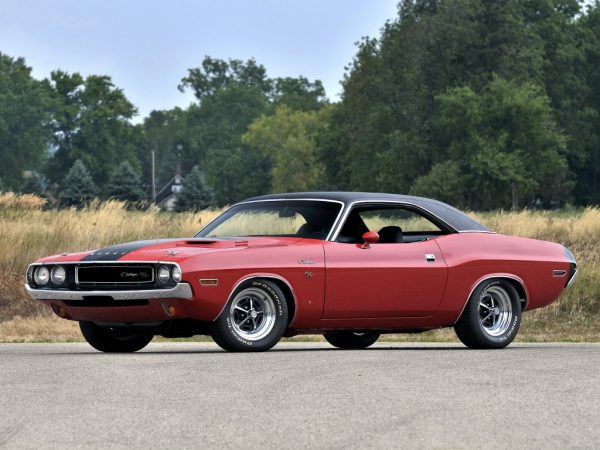

Surprise surprise, another classic American muscle car. This time, though, we’re going with a specific year in mind. When the Challenger was released, it had just four years to figure itself before disappearing for a few years, coming back as a terrible import, then disappearing again until its 2008 revival. The subsequent editions of the Challenger R/T saw numerous redesigns and options dropped, but despite these changes, we feel that Dodge really got it right on the first try here. Engine choices ranged from the 335 hp 6.28L Magnum V8 up to the fabled 7.0L, 425 bhp Hemi V8 for R/T models, and you can probably guess which one is the engine of choice here. There really is nothing like Hemi power. The Challenger debuted with a body style akin to that of the Plymouth Baracuda (no surprise there) and was also similar to some of the other muscle monsters on the market. There’s something really unique about the Challenger though; there’s a sort of feral ruthlessness about it that makes it seem like a cornered, angry animal.
